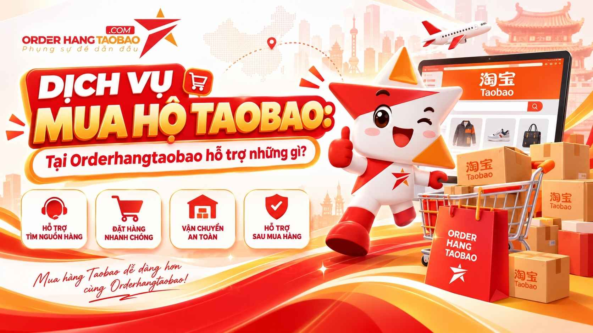
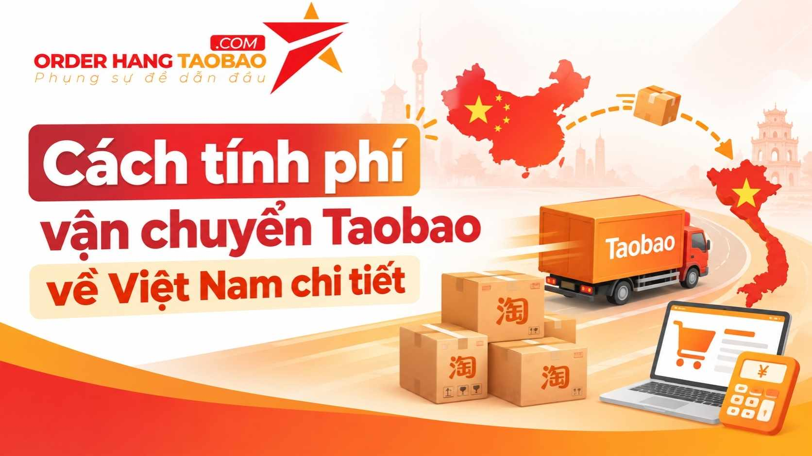

Mua một sản phẩm trên Taobao và đưa hàng về Việt Nam thường gồm nhiều công việc: chọn đúng phân loại, trao đổi với người bán, thanh toán, theo dõi kiện hàng và kiểm tra chi phí vận chuyển. Khi số lượng sản phẩm tăng lên, người mua càng cần một cách làm rõ ràng để biết đơn đang ở đâu, khoản nào đã được xác nhận và vấn đề nào cần xử lý trước khi mua.
Order Hàng Taobao giới thiệu các dịch vụ mua hộ, tìm nguồn hàng và vận chuyển Trung–Việt dành cho cá nhân, chủ shop và doanh nghiệp. Bài viết này giúp bạn hiểu phạm vi hỗ trợ của thương hiệu và chuẩn bị thông tin trước khi sử dụng dịch vụ. Các điều kiện cụ thể cần được xác nhận theo báo giá và chính sách áp dụng cho đơn hàng tại thời điểm giao dịch.

Hình ảnh giới thiệu dịch vụ mua hộ. Nguồn: orderhangtaobao.com.
Order Hàng Taobao hỗ trợ những nhu cầu nào?
Theo thông tin công bố trên website, Order Hàng Taobao hỗ trợ mua hàng từ Taobao, Tmall và 1688, cùng các dịch vụ liên quan như tìm nguồn, thanh toán hộ, ký gửi và vận chuyển. Người sử dụng nên chọn phạm vi hỗ trợ dựa trên phần việc mình đã chủ động thực hiện được, thay vì mặc định mọi đơn hàng đều cần cùng một gói dịch vụ.
Chẳng hạn, một người đã tìm được đúng sản phẩm nhưng chưa thuận tiện thanh toán có thể trao đổi về khâu mua hộ. Chủ shop muốn khảo sát mẫu hàng mới cần tập trung vào phân loại, chất liệu và số lượng thử. Người đã làm việc trực tiếp với nhà cung cấp lại cần làm rõ yêu cầu tiếp nhận kiện hàng và phương án vận chuyển về Việt Nam.
Điểm khởi đầu của quá trình hợp tác là mô tả nhu cầu. Một yêu cầu rõ ràng giúp hai bên hiểu ai phụ trách liên hệ người bán, ai xác nhận phân loại và khi nào cần xin ý kiến trước khi thay đổi đơn. Đây cũng là cơ sở để đối chiếu khi sản phẩm hoặc điều kiện giao dịch phát sinh khác biệt.
Nhập hàng Taobao: chuẩn bị đúng thông tin sản phẩm
Với nhu cầu nhập hàng Taobao, bạn nên lưu đường dẫn sản phẩm kèm ảnh phân loại muốn mua. Cùng một trang bán hàng có thể có nhiều kích thước, phiên bản hoặc bộ phụ kiện. Nếu chỉ gửi ảnh tổng quan, người hỗ trợ có thể chưa xác định được chính xác lựa chọn bạn cần.
Trước khi đặt hàng Taobao, hãy ghi riêng màu sắc, kích thước, số lượng và điều kiện bắt buộc. Ví dụ, với đồ dùng cần lắp vào một vị trí có sẵn, kích thước là dữ liệu quan trọng hơn tên gọi chung của sản phẩm. Với mặt hàng thời trang, bảng size và mô tả chất liệu cần được xem cùng ảnh người bán cung cấp.
Người lần đầu mua nên thống nhất cách xử lý khi người bán hết phân loại đã chọn. Có thể yêu cầu liên hệ lại trước khi đổi màu, đổi mẫu hoặc thay shop. Việc ghi rõ nguyên tắc này giúp bạn giữ quyền quyết định đối với sản phẩm thực nhận và giảm thay đổi ngoài dự kiến.
Chọn nguồn 1688 theo mục tiêu kinh doanh
Khi tìm nguồn nhập hàng 1688, chủ shop thường quan tâm đồng thời đến mẫu mã, điều kiện số lượng và khả năng đặt lại. Thay vì chỉ so sánh giá hiển thị, hãy lập một bảng yêu cầu với các trường sản phẩm, số lượng thử, phân loại, yêu cầu đóng gói và thời điểm cần nhận mẫu.
Ảnh minh họa nguồn hàng 1688. Nguồn: orderhangtaobao.com.
Với nhu cầu dịch vụ đặt hàng 1688, thông tin nên trao đổi gồm cách tính giá theo số lượng, thời gian người bán chuẩn bị hàng và quy cách giao cho đơn vị vận chuyển. Các chi tiết này cần được kiểm tra cho chính sản phẩm muốn mua, vì những mặt hàng khác nhau có thể có yêu cầu khác nhau.
Nếu đang cân nhắc order 1688 cho một sản phẩm mới, đơn thử có thể giúp bạn có thêm dữ liệu về mức độ phù hợp trước khi tăng số lượng. Hãy xác định tiêu chí đánh giá mẫu: đúng quy cách, ngoại quan, đóng gói hay khả năng sử dụng trong mục đích cụ thể. Không nên coi hình ảnh gian hàng là bằng chứng đủ để quyết định nhập số lượng lớn.
Vận chuyển hàng Trung Quốc cần xem cả đặc điểm kiện hàng
Chi phí vận chuyển hàng Trung Quốc không nên được đánh giá chỉ bằng một con số tổng chưa có mô tả. Bạn cần hỏi khoản nào thuộc tiền hàng, phí nội địa, phí dịch vụ và phí đưa hàng về Việt Nam. Nếu có phí đóng gỗ, gia cố hoặc giao hàng chặng cuối, các khoản này cũng cần được nêu rõ khi trao đổi.

Ảnh minh họa nội dung chi phí vận chuyển. Nguồn: orderhangtaobao.com.
Hàng dễ vỡ, hàng có kích thước lớn hoặc sản phẩm cần bảo vệ bề mặt có thể cần phương án đóng gói phù hợp. Trước khi chốt đơn, bạn nên gửi mô tả sản phẩm và hỏi cách xác định trọng lượng, kích thước tính phí cùng các điều kiện tiếp nhận. Không nên suy ra điều kiện của một mặt hàng từ trải nghiệm với một mặt hàng khác.
Để tham khảo cấu trúc chi phí công bố, bạn có thể xem bảng phí dịch vụ rồi yêu cầu xác nhận báo giá cho đơn cụ thể. Bài giới thiệu này không đưa ra một mức phí hay thời gian giao cố định, bởi điều kiện thực tế cần được thống nhất khi giao dịch.
Ký gửi và mua hộ khác nhau ở trách nhiệm từng khâu
Nếu đã tự làm việc với người bán, bạn có thể tìm hiểu ký gửi hàng Trung Quốc. Khi đó, những câu hỏi cần làm rõ là cách ghi thông tin người nhận, mã khách hàng trên kiện, cách báo hàng đang về kho và dữ liệu cần giữ để truy tìm khi kiện chưa được nhận diện.
Ngược lại, nếu cần người hỗ trợ thực hiện giao dịch mua hàng, phạm vi mua hộ cần ghi rõ ai xác nhận sản phẩm, ai trao đổi với shop và cách xử lý khi người bán giao thiếu. Việc phân biệt hai hình thức giúp bạn biết vấn đề nào thuộc khâu mua, vấn đề nào thuộc khâu tiếp nhận hoặc vận chuyển.
Đối với nhu cầu nhập hàng Trung Quốc có yêu cầu chứng từ, hãy mô tả loại hàng, mục đích sử dụng và hồ sơ bạn cần nhận trước khi đặt mua. Không mặc định một phương án phù hợp cho mọi sản phẩm. Các yêu cầu chuyên biệt cần được bộ phận phụ trách kiểm tra và xác nhận riêng.
Quy trình trao đổi để đơn hàng dễ theo dõi
Bạn có thể bắt đầu bằng một danh sách sản phẩm đơn giản, trong đó mỗi dòng gồm đường dẫn, phân loại và số lượng. Sau đó bổ sung yêu cầu kiểm tra, đóng gói và nơi nhận tại Việt Nam. Nếu mua nhiều sản phẩm, việc đánh số từng dòng giúp hai bên trao đổi mà không nhầm giữa các mẫu tương tự nhau.
Tiếp theo, hãy đối chiếu báo giá và phạm vi dịch vụ. Những nội dung cần xác nhận gồm khoản đã tính, khoản có thể phát sinh, điều kiện thanh toán và cách thông báo khi cần thay đổi sản phẩm. Hãy lưu cùng một hồ sơ thay vì để thông tin rải rác trong nhiều đoạn chat.
Trong quá trình theo dõi, nên giữ mã đơn và thông tin kiện hàng được cung cấp. Khi cần hỗ trợ, gửi đúng mã cùng mô tả vấn đề cụ thể sẽ hữu ích hơn một yêu cầu chung chung. Sau khi nhận hàng, giữ ảnh hoặc video cần thiết để đối chiếu nếu sản phẩm có điểm cần trao đổi lại.
Kiểm hàng và xử lý phát sinh cần có căn cứ
Trước khi sử dụng dịch vụ, bạn nên đọc chính sách kiểm hàng và hỏi rõ phạm vi áp dụng cho loại hàng của mình. Kiểm ngoại quan, đếm số lượng và kiểm thử chức năng là các yêu cầu khác nhau; không nên hiểu một tên dịch vụ chung là đã bao gồm mọi hình thức kiểm tra.
Nếu một đặc điểm có ảnh hưởng lớn đến quyết định mua, hãy mô tả bằng tiêu chí cụ thể. Chẳng hạn, cần đúng một loại đầu cắm, đúng kích thước theo bản vẽ hoặc đủ các phụ kiện trong danh sách. Việc mô tả trước giúp đơn vị hỗ trợ xác nhận yêu cầu nào có thể tiếp nhận và yêu cầu nào cần bạn tự đánh giá khi nhận hàng.
Khi phát sinh vấn đề, dữ liệu rõ ràng giúp quá trình đối chiếu có cơ sở: mã đơn, sản phẩm, số lượng, ảnh liên quan và nội dung đã thống nhất. Các phương án xử lý phải dựa trên chính sách và thỏa thuận áp dụng, không suy diễn từ một lời giới thiệu chung.
Tìm hiểu thương hiệu và bắt đầu từ nhu cầu thực tế
Order Hàng Taobao là một đầu mối để người mua tìm hiểu dịch vụ hỗ trợ mua hàng và vận chuyển Trung–Việt. Dù bạn mua một món đồ, thử nguồn hàng hay chuẩn bị nhập cho cửa hàng, bước hữu ích đầu tiên vẫn là xác định điều mình cần và ghi lại các thông tin quan trọng của đơn hàng.
Truy cập website Order Hàng Taobao để xem dịch vụ, hướng dẫn và kênh liên hệ hiện hành. Khi gửi yêu cầu, hãy kèm đường dẫn sản phẩm, phân loại, số lượng và những điều cần được xác nhận. Một cuộc trao đổi có dữ liệu cụ thể sẽ giúp bạn lựa chọn phạm vi hỗ trợ phù hợp và chủ động hơn trong từng bước đặt hàng.